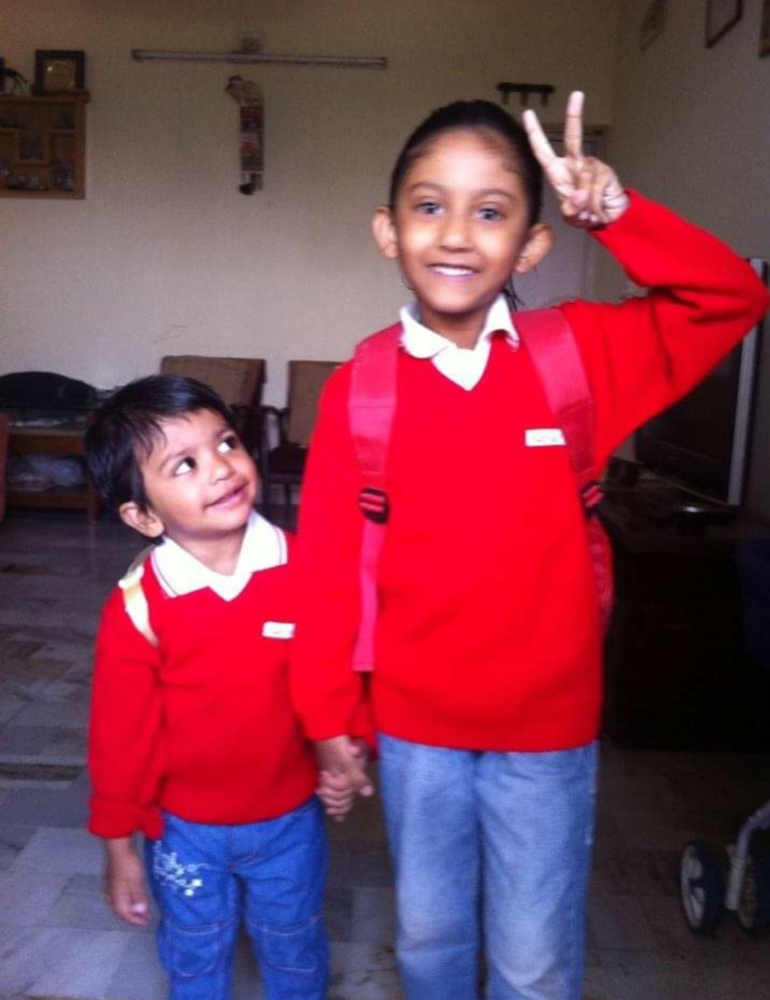

places you must visit
.png.jpg?1589982151)
Dev Resort
Visited on Jan 2020
Devs camp serves you with a 40 KVA solar power, A briefing hut (With wildlife photography display) where you’re taught do’s and don’ts of forest discipline. A personal family pond, swimming pool, an Eco conference hall for business meetings and trainings, An Adventure/Aqua Junction and much more. we also have a walk through aviary where you can feed the wings and feel their love. Eco tourism directs us towards exotic natural environments. Dev’s camp being an eco-tourism center near Vadodara, you can enjoy a rain bath just like in a rain forest, drizzling the enjoyment and fun all over you. Apart from the various adventure Junction they also do team building activities and training for corporate and school students. Educate them the diversity and importance of nature. Night Camping is an outdoor recreational activity, a stay away from home in a shelter such as a tent which includes activities like star gazing, camp fire, Glamping dinner, Night trekking, etc.

Rani Ki Vav
Visited on Sept 2018
Rani Ki Vav is the oldest and the grandest stepwell in the state of Gujarat. It is situated at Patan and is believed to have been built during 1022 to 1063 AD. The construction was completed by the widowed queen Udayamati. She was the wife of King Bhimdev I, son of Mularaja, the founder of the Solanki dynasty of Anahilwada Pattan. It is a richly sculptured monument and a major tourist spot in Patan. The size of the Rani Ki Vav is so huge that the tourists appear to be ants climbing an anthill.

Zanjari Waterfalls
Visited on Jan 2021
This waterfalls has made my day. Site is so serene as you have to walk in waters to reach to the actual waterfall, its so natural site here with very raw elements of nature surrounding you. Overall, I am in love with this place.
review of movies

excellent film
A warm love story, which stands out from other stereotype lovestories of Bollywood. Probably one of the best performances from the leading duo, and an excellent and pacy direction from Imtiaz Ali, makes this a real treat of a movie. Beautiful songs, equally well-shot on the backdrops of Shimla and Manali.

lovely film
When a film has such an overwhelming positive and pleasant title, can the contents be any less sunny? The good thing about Happy is that it doesn't let its name down.With a simple story and imaginative screenplay, the movie keeps you engrossed. The combination of enjoyable fun, good music and easy emotions make the film work. Director Karunakaran, who knows a thing or two about youthful romance stories, wrests the best out of his cast and crew. Allu Arjun, the sensational young star in the making, understands his responsibility and come out with a well-etched performance. His chemistry with Genelia is also attractive.

awesome film
A fresh feminist spin on a cherished franchise. Audiences have been watching the trio of lady spies known as Charlie’s Angels kick ass and shut down criminal conspiracies for more than 40 years now. It all started as a television show on ABC in 1976. Over 20 years later, there were feature reboots in 2000 and 2003 starring Drew Barrymore, Cameron Diaz and Lucy Liu, both from director McG.
news on enviorment
-
LEGO plans to find replacement material for bricks by 2030

In an effort to be more environmentally responsible, LEGO have said they aim to stop manufacturing bricks made of plastic resin and are considering other options, which could include hemp. According to Telegraph World, the company makes 60 billion blocks a year. While LEGO want to replace the harmful plastic used in their products, they also require the new material to meet the high standards that allow the blocks to work as they always have, especially with the effective “clicking” together is a key aspect of the iconic coloured block.
-
Amazon deforestation and number of fires show summer of 2019 not a 'normal' year

The perceived scale of the Amazon blazes received global attention this summer. However, international concerns raised at the time were countered by the Brazilian Government, which claimed the fire situation in August was 'normal' and 'below the historical average'.An international team of scientists writing in the journal Global Change Biology say the number of active fires in August was actually three times higher than in 2018 and the highest number since 2010.
my book
Bill Gates
Reading is still the main way that I both learn new things and test my understanding.
List of books

Famous Five: Five go off to camp
Famous Five

Five Go Off To Camp is the seventh novel in the Famous Five children's adventure series by Enid Blyton. It was first published in 1948, and was followed by a number of reprints and translations. The story revolves around mysterious "spook trains" that the Five hear about on a lonely moor. The book has been adapted to two television series.
Best Buy LinkBridge to Terabethia
Bridge to Terabethia
Bridge to Terabithia is a work of children's literature about two lonely children who create a magical forest kingdom in their imaginations. The novel was written by Katherine Paterson and published in 1977 by Thomas Crowell. In 1978, it won the Newbery Medal.
Best Buy Link
Harry Potter: The Goblet of Fire
Harry Potter
Harry Potter and the Goblet of Fire is the fourth book in the Harry Potter series by J. K. Rowling, published in 2000. A film version of this book was released in November 2005. This book is seen by many fans as the beginning of darker times in the wizarding world, as it shows the return of Voldemort.
Best Buy Link
Ashoka and the Mudduled Messages
History Mystery
The great Mauryan emperor Ashoka is furious. Someone is messing with the messages he wants inscribed on rocks and pillars. What's worse, the messages are now the opposite of what Ashoka wants to say. Who can help the emperor solve this mystery?
Best Buy Link